Sekadarnya tentang Estetika Komputasi:
Sebuah catatan atas gelagat perkembangan estetika berbasis komputasi di Jawa Timur
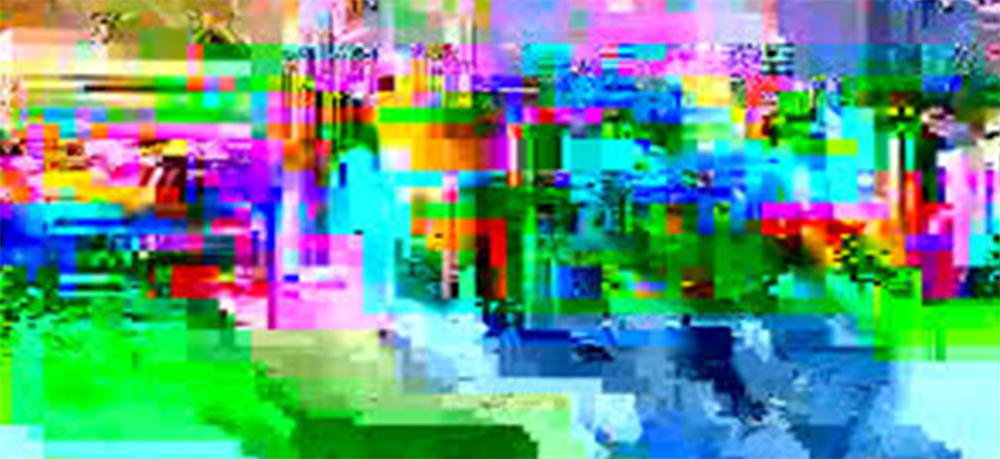
Seni dengan teknologi, membuat saya penasaran sejauh mana kaitannya , dan kelihatannya menjanjikan. Dengan teknologi kelihatannya, seni itu bukan jadi barang yang rutin, tetapi terus bergerak, terus maju, terus berubah. -Sunaryo-
"Computing is not about computers any more. It is about living." -Nicholas Negroponte-
Pertemuan
Di tahun 2010 saat diminta bantuan untuk mengajar di salah satu universitas negeri di Malang, yang kebetulan baru membuka jurusan seni rupa. Saat itu saya mengusulkan dua mata kuliah, salah satunya adalah Rekayasa Visual, serta memasukkan materi Estetika Komputasidalam salah satu bab untuk mata kuliah estetika. Usulan dan upaya memasukkan bab dalam matakuliah itu, tentu bagi saya sendiri bukan mau bermaksud kenes. Namun lebih dari sekadar itu, seni rupa berbasis komputasi ini bukan hanya persoalan media baru saja,bukan perayaan atas kebaruan media yang menyeruak masuk dalam dunia seni rupa, namun juga pemahaman dan perubahan prilaku produksi karya seni bahkan seni rupa yang paling konvensional pun : seni lukis. Seni Media baru ini, dalam pandangan saya tidak hanya menuntut pemahaman untuk meliarkan penafsiran, namun juga menuntut pemahaman atas perangai media baru itu, yang memiliki lapisan-lapisan teknis spesifik yang tidak bisa kita temukan pada media konvensional. Sejauh yang saya baca dan amati, banyak karya-karya media baru ini yang umumnya hanya dihargai dari idenya saja atau pemaknaan disisi konteksnya dan meninggalkan jauh-jauh teks kekaryaannya.
Dunia seni berbasis komputasi, sebagaima yang telah disebutkan tidak hanya melahirkan karya-karya media baru, namun juga cara produksi baru untuk karya lukis konvensional, juga memanfaatkan teknologi berbasis komputasi itu. Sebut saja karya F.X Harsono, Krisna Murti, Ade Darmawan, Indra Ameng, Hafiz (Jakarta), Mess 56, Indieguerillas, Koko P Sancoko (Jogja); Willi Himawan, Dikdik Sayahdikumullah, Dadan Setiawan (Bandung), Dadang Rukmana,Keo Budi Harijato, Bobby Nugroho, Pandu Wijaya, Astu Prasidya, Purnomo Sigit, Novantri aka. NoVanGogh,Agus 'Suga' Salim, Didit Prasetyo(Malang); Ivan Haryanto, Kiki Artisick, Evan Raditya Pratomo (Paper Captain), Ruddy Margono, Benny Wicaksono, Helmi (Surabaya). Para perupa ini dikenal dengan penggunaan media, baik sebagai karya atau sebagai alat dalam berkarya atau mengambil kecenderungan visual yang dikenali atau muncul dari dalam dunia komputasi.
Dalam buku Being Digital, Nicholas Negroponte . Ia menyebutkan ada kekhawatiran bahwapertemuan seni dan teknologi justru akan merusak seni. Ia mengibaratkan denga rasa sambal Jalapeno dalam saus Itali. Teknologi akan menghancurkan sinyal seni yang halus menjadi berantakan. Namun kenyataanyapertemuan seni dan dunia komputasi (teknologi, justru menyuburkan seni). Pertemuan keduanya melahirkan karya-karya baru, bukan saja melahirkan karya yg bebasis medium specific, namun juga memunculkan kecenderungan dan cara-cara baru dalam produksi seni( process specific). Jika kita melihat sejarah seni, sesungguhnya pertemuan seni dan teknologi tak lahir dari pasca pengumuman Delaroche yang menyatakan:"Sejak hari ini (saat ditemukan fotografi), seni lukis berakhir!". Pada kenyataanya seni lukis tak jadi berakhir. Seni lukis berakhir barangkali bukan seni lukisnya, namun praktik seni lukis yg berada pada tradisi mimetic. Kita tahu bahwa seni lukis masa itu adalah masa saat menggambar yang tampak dimata adalah masa yg gemilang, kala itu karya seni lukis berfungsi sebagai rekaman fotografi seperti yg juga tampak pada beberapa karya Raden Saleh yang juga menjadi bagian dari pelukis kerajaan yg berperan sama seperti fotografi. Saat fotografi hadir yang paling menyentak bukan hanya kemiripannya mengkopi apa yg tampak, tapi juga kecepatan yg dihasilkan oleh fotografi. Dalam istilah Delaroche, orang yg tak punya kecakapan pun bisa melakukannya. Kecakapan di sini tentu juga dalam konteks dibandingkan dengan kecakapan melukis naturlistik para pelukis. Namun teknologi fotografi yang diumumkan Delaroche bukanlah pertemua awal dengan kamera.
Ditahun 2001 dalam bukunya yang masyhur Secret Knowledge, seniman Inggris David Hockney mengemukakan bahwa Jan Vermeer yang melukis Gadis Beranting Mutiara, ternyata menurut Hockney telah menggunakan teknologi kamera awal yang dikenal dengansebutan Camera Obscura yang dikembangkan Al Hazan dari teori bayangan terbalik Plato. Temuan ini dijelaskan dengan gamblang oleh David Hockney. Sebelumsampai pada keputusan itu, Hockney telah meneliti karya awal masa Renesan yang jumlahnya mencapai ribuan. Dugaan penggunaan lensa (baca: teknologi kamera) rupanya kemudian dilanjutkan oleh Tim Jenison , sorang teknokrat asal Amerika Serikat. Tim Jenison kemudian membuat replika studio Vermeer, lantas memulai penelitianya dengan melukis ala Vermeer dengan bantuan Camera Obscura. Hasilnya mengejutkan, sebab ternyata ada bagian dari lukisan Vermeer (Gambar 1) yang diteliti oleh Jenison yang memperkuat dugaan pemakaian lensa itu, misalnya out of focus (kehilangan fokus). Fenomena kehilangan fokus ini hanya terjadi dalam penggunaan lensa, sedangkan bukti lainnya adalah bagian tertentu dalam karya Vermeer terlihat distorsi, melengkung, distorsi inipun juga hanya mungkin terjadi jika menggunakan lensa. Peneliti yang lain yang meneruskan penemuan David Hockney adalah Roberta Lapucci dengan mengambil pokok Caravaggio and The Science of Light. Dalam pandangannya, Lapucci menegaskan bahwa pertama kali yang menggunakan lensa adalah Caravaggio juga sebelum Vermeer. Namun, dalam sebuah kuliahnya Roberta Lapucci juga mengemukakan bahwa kendati banyak yang menghubungkan kecanggihan optis Caravaggio, namun yang pertama kali menghubungkan antara teknis optis dengan penggunaan camera obscura dengan tracing adalah David Hockney tentu dalam buku Secret Knowledge itu.
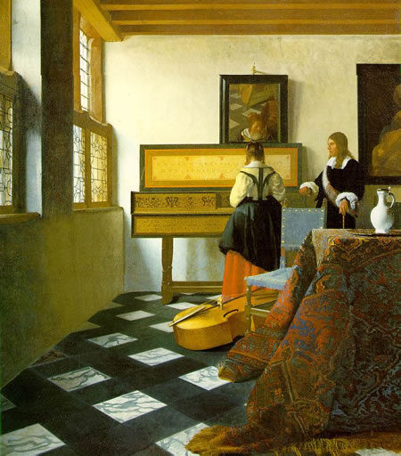Piano Lesson, Vermeer (Gambar 1)
Komputer dan Lahirnya e-kpresionisme
Lensa, adalah teknologi paling awal yang kemudian disusul oleh gambar bergerak atau video. Kamera bisa jadi dapat disepadankan dengan masa seni rupa mimesis dalam konteks estetika komputasi, yang menuntut kemiripan dan representasi dari obyek, pun jika ada ada aliran dalam fotografi baru, yang memotret obyek sedemikian rupa sehingga obyek yang dipotret hasilnya hampir tidak merepresentasikan obyek itu secara keseluruhan. Dalam kecenderungan teknis seperti ini, potret yang dihasilkan jauh dari citraan obyek yang direkam. Kendati teknis ini berhasil mengasingkan obyek aslinya, namun tetap saja obyek itu adalah hasil rekaman sebuah obyek yang di”lihat” lensa. Obyek yang dilihat tersebut tetaplah sama, namun dengan angle yang memotret sebagian dari keseluruhan obyek itu.
Kedatangan komputer kemudian merubah foto atau rekaman gambar sebagai raw-material, dengan kata lain semua yang masuk ke komputer menjadi barang mentah. Proses selanjutnya tentu saja dengan berbagai kemampuan yang dimiliki oleh komputer, raw-material itu diperlakukan sedemikian rupa hingga menjadi karya “jadi”. Komputer, kamera dalam konteks ini bisa disepadankan dengan cara melukis naturalis yang lebih mengedepankan kemiripan, sedangkan komputer barangkali bisa disepadankan dengan post-impressionis, yang lebih mengedepankan impresi dan ekspresi dalam membuat karya, dengan kata lain kehadiran komputer telah menggeser dari yg sekadar mengutamakan mimetic menjadi non-mimetic atau munculnya e-kspresionisme. Dalam perkembangan estetika komputasikecenderungan artistiknya tidak bergerak secara linier, artinya satu aliran ke aliran yg lain, namun bergerak secara bersamaan artinya dalam perkembangannyakecenderungan artistik, estetika komputasi (medium specific) di satu kelompok terus berupaya menciptakan karya-karya corak realistik seperti yg dilakukan Melanie Delon, Linda Bergvist, Matt Dixon (digital painting) Max Edwin Wahyudi (3D Modelling), sementara yg lain juga melakukan kecenderungan yg berbeda yaitu berangkat dari menulis code atau sering juga disebut dengan drawing with code seperti yg dilakukan oleh Casey Reas, Ben Fry, Joshua Davis dan Branden Hall dan masih banyak nama lagi. Ben dan Casey membuat sebuah program yang disebut dengan Processing, pogram ini diklaim sebagai program untuk seniman. Processing dibangun dengan bahasa java script, serta hasilnya bisa diekspor menjadi file executable utuk Windows, Mac dan juga Linux, serta dapat diekspor menjadi javascript untuk web dan juga dapat dijadikan file(dot).apk untuk android. Sedangkan Joshua Davis dan Branden Hall membuat library yg diberi nama HYPE. Hype sendiri adalah library yang dibangun dari kode pemrograman actionscript yang lazim disebut dengan as3. As3 inimerupakan turunan bahasa C dan menjadi bahasa native untuk Adobe flash CS3.
Teknis memperlakukan foto sebagai raw-material ini ternyata telah dilakukan oleh Andy Warhol di tahun 1985 dengan mengunakan pemrograman grafis untuk komputer Amiga 1000. Hal ini baru dapat dibuktikan saat sebuah kelompok ahli komputer CMUCB (Carnagie Mellon University Computer Club), berhasil melakukan eskavasi digital pertama terhadap floppy disk Andy Warhol yg dimiliki oleh Museum Andy Warhol. Dalam sebuah kisah biografi Stave Job juga menceritakan ketertarikan Warhol terhadap dunia komputer grafis, yang baru hadir. Job bercerita bahwa ia memberikan komputer apple pertama untuk putra John Lennon yang sedang berulang tahun, di lantai atas Job mempraktikkan cara menggunakannya. Saat itu muncul Warhol dan bertanya apa itu? "Ini Apple Computer" jawab Job. "Oh ya, saya pernah ditelfon seseorang yang meminta saya untuk mencoba itu, tapi sampai sekarang belum saya datangi". Iya itu saya yang menelpon Anda, kata Stave Job. Di kemudian hari Warhol tidak memlih Apple Computer, namun lebih memilih Amiga 1000. Eskavasi digital yang dilakukan CMUCB berhasil dan benar-benar menunjukkan bahwaWarhol telah membuat karya berbasis komputasi itu (Gambar 2). Di tahun 1986 Sanento Yuliman pernah menulis perihal seni komputer yang diselenggarakan oleh Pusilkom-UI (Pusat Ilmu Komputer Universitas Indonesia) yang diikuti oleh salah satu staf pengajar FSRD ITBD Djoni Djuhari. Sanento dengan rinci menyebutkan soal kesan yang dihasilkan oleh komputer berupa kesan olesan cat serta guratan pastel.
Kecanggihan komputer menyebabkan orang dengan mudah membuat karya, dalam kata-kata Nicholas Negroponte, corat-coret yang dilakukan Duchamp terhadap repro lukisan Mona Lisa, menjadi kelakar anak-anak, maksudnya penggabungan satu gambar dengan gambar lain, yg tak punya hubungan dapat dilakukan dengan mudah. Saat ini ketika teknologi komputasi memasuki babak baru yaitu komputasi awan, di mana orang saling terhubung orang saling berbagi dalam hitungan detik, apa yang dibagi oleh Zacking melalui Instagram atau oleh Ichwandardi a.k.a Pinot melalui vimeo, sedetik kemudian ditandai dengan suka, dikomentari bahkan tautanya dibagi. Artinya seni komputasi di masa IoT (Internet of everyThing) bukan hanya pada hal ikhwal karya itu saja, namun juga distribusinya yang tak terbatas. Form meme (dibaca : mim)
Teknologi Digital dan Cara Kerja Seniman
Sejak dulu seniman dianggap sosok yang bekerja dengan logika terbalik, artinya segala sesuatu yang ada ditangan seniman seringkali diperlakukan dengan sudut pandang yang berbeda, cara pandang macam inilah yang juga pada akhirnya melahirkan kecenderungan-kecenderungan bentuk-bentuk visual yang baru. Cara pandang seperti ini juga tak jarang melahirkan kontroversi-kontroversi di wilayah sosial, kontroversi muncul ini tentu akibat dari cara pandang terhadap sesuatu yang berbeda sama sekali dengan cara pandang orang pada umumnya. Cara pandang ini jugalah yang kerap menjadi musabab seorang seniman dianggap sebagai orang gila oleh orang awam.
Pola seperti ini, ternyata jika kita amati juga terlihat dalam penggunaan karya-karya teknologi digital. Misalnya saja, fitur yang ada di Adobe Photoshop seperti fitur efek blur, patahan gambar karena kekurangan atau keterbatasan jumlah bit pada pixel yang melahirkan S,W, O menjadi buruk justru diekspos, serta efek terpiuh (glitch) gambar akibat CD yang macet atau saat proses kopi atau proses unduh yang tidak sempurna, dan yang terakhir menjadi trend adalah gambar low poly (Gambar 3). Efek Blur yang dimiliki oleh Adobe Photoshop adalah salah satu dari sekian efek yang dipakai seniman untuk melahirkan jenis citraan baru, bahkan bisa dibilang dirayakan dengan sangat meriah, cirinya tentu saja kelahiraan jenis karya macam ini sempat menjadi tren. Efek blur yang sesungguhnya dipakai sebagai fitur untuk melahirkan citra digital agar mirip lukisan justru diperlakukan secara lain.
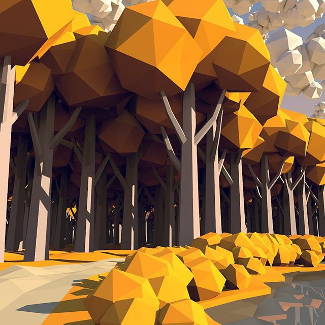lowpoly image dalam format 3d Imaging (Gambar 3)
Sedangkan yang juga unik adalah apa yang dianggap kekurangan atau cacat dalam dunia digital justru diadaptasi oleh seniman. Hasilnya citraan cacat didunia digital ini justru menjadi sejenis form atau aliran baru yang disebut dengan pixel art. Demikian juga dengan gambar low poly (kependekan dari istilah low polygon) yang belakangan ini jadi tren. Low-poly (Gambar 4) awalnya adalah jalan keluar dalam bidang perupaan 3D yang diupayakan agar bentuk 3D tampak halus. Agar gambar 3D tampak bagus dan halus, syaratnya adalah jumlah polygon harus banyak atau lazim disebut dengan hi-poly (high polygon). Hi-poly memakan penggunaan memory serta kapasitas yang besar (jumlah filenya lebih besar), karena besar maka dalam proses displaynya juga banyak menimbulkan masalah terutama untuk pengguna yang menggunakan komputer dengan spesifikasi rendah. Untuk mengatasi persoalan ini maka dibuatlah gambar 3D yang lowpoly, gambarnya tidak mulus, berfacet-facet. Facet-facet itu menarik perhatian banyak orang saat ini. Sesungguhnya jika kita menoleh pada masa lampau, teknis gambar lowpoly ini sebenarnya mirip dengan jenis lukisan kubis analitik atau lukisan Cubism Picasso di awal-awal setelah menemukan Les Demoiselles d’Avignon. Lowpoly juga mirip-mirip gaya ilustrasi Wedha Abdul Rasyid di majalah Hai di tahun 90-an, yang kini juga memiliki basis komunitas dengan nama Wedha's Pop Art Potrait atau sering disingkat dengan WPAP (Gambar 5).
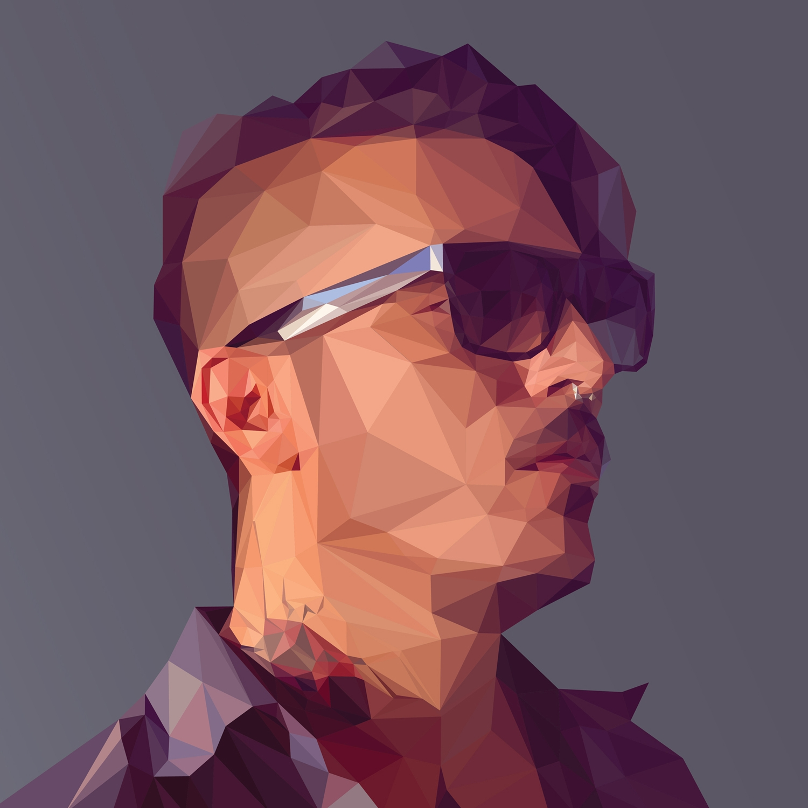Lowpoly dalam format 2D (Gambar 4)
Teknis perupaan dengan sudut pandang yang tidak lazim ini banyak kita jumpai dilakukan banyak seniman di pelbagai penjuru dunia. Dunia digital selain memiliki kemampuan mutasi gambar yang relatif sempurna, dunia digital juga memiliki kemampuan persebaran yang cukup tinggi, karya digital kemiripan kopiannya tidak bisa dibedakan dengan hasil aslinya, kemiripan kopian dengan aslinya adalah berkah sekaligus menjadi masalah tersendiri.
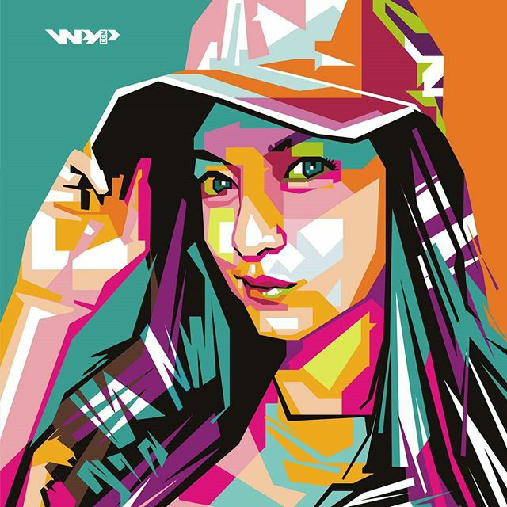Wedha's Pop Art Potrait (Gambar 5)
Perupa Jatim dalam Bingkai Estetika Komputasi
Di tahun 2010, saat saya mengadakan Pameran karya-karya perupa yang berasal dari Jawa Timur di Bale Tonggoh Selasar Sunaryo, banyak pengunjung terutama seniman senior yang mengamati bahwa karya-karya yang saya tampilkan, dengan kualitas realistik yang baik, bahkan mendapatkan pujian, dalam pujian itu ada yang selalu "tinggal di kepala", yaitu kata-kata corak lukisan yang dipajang itu banyak yang realis-fotografis. Dalam pandangan saya kecenderungan realis fotografis ini tak bisa dihindari atau barangkali dengan tidak sadar tidak bisa dihindarkan, lantaran di masa ini ketika memotret menjadi sesuatu yang biasa saja, bahkan jumlah memotret seolah bisa "dipersamakan dengan jumlah tarikan napas" terutama saat semua orang membawa telpon genggam dan tiap telpon genggam dibekali kamera. Dan yang paling jelas memang adalah cara melihat fotografis dipersamakan dengan cara melihat mata telanjang, yang sesungguhnya memiliki perbedaan jelas sekali, bukan hanya faktor frame sudutnya saja, namun juga kekuatan menangkap cahaya, kekuatan mata tidak bisa disamakan. Seperti yang juga dipaparkan Charles M. Falco dalam film Tim Jenison itu, tone warna dalam karya Vermeer adalah pasti hasil tangkapan lensa, terlebih lagi efek patulan (backlight) yang muncul dipinggir obyek juga hasil tangkapan kamera. Cara pandang dan cara melukis dengan kekuatan efek cahaya pantul ini dianggap cara pandang mata biasa, padahal menurut Charles M. Falco, mata telanjang tak akan dapat menangkap efek pantul cahaya itu. Namun, cara pandang efek pantul ini dianggap biasa saja dan dirayakan dalam teknis melukis hari ini, dengan kata lain hampir setiap seniman memberlakukan teknis melukis fotografis (backlight). Pertama lukisan itu diambil dari foto dan foto itu telah mengalami editing kendati minimal. Pola ini memang tak ada masalah dalam kesenian, paparan di atas itu hanya untuk menegaskan bahwa, ada proses berkearya yang berubah sejalan dengan penemuan kamera kemudian komputer. Ada banyak yang tak menyadari perubahan pola itu, numun juga ada perupa di Jatim yang sangat sadar atas perubahan proses yang juga mempengaruhi hasil, kesadaran itu justru dieksponsenya lebih jauh, bahkan tak jarang dilakukan beberapa percobaan hingga akhirnya medapatkan hasil akhir seperti yang diharapkan. Di Jawa Timur perupa yang secara sadar mengekploitasi, untuk menyebut beberapa dari mereka adalah:
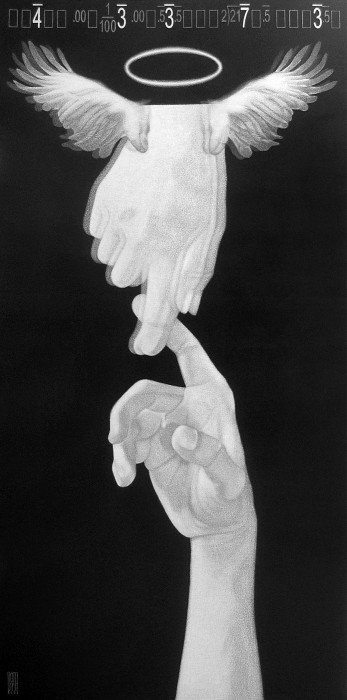Dadang Rukmana - Pulang Bersama Teman Yang Senantiasa Menanti, Akrilik di atas Kanvas
Dadang Rukmana (Malang), adalah perupa yang tetap setia menggunakan media konvensional, namun dalam penggunaan media konvensional pada karyanya, ternyata prosesnya tidak dialakukan dengan konvensional, ia misalnya memilih membeli komputer, agar komputer itu selain dapat mengakses pelbagai ilmu yang dihadirkan melaui internet, komputer itu juga dapat mendukung kinerjanya. Dalam perbincangan santai ia secara khusus memakai jasa orang yang mengerti komputer grafis untuk bekerja membuat "sketsa" bagi karyanya. Dari proses itu, banyak kecenderungan artistik yang juga muncul dari interaksinya dengan komputer grafis. Interaksi itu menghasilkan berbagai ragam artistik. Ragam artistik yang dihasilkan itu juga dengan jelas memakai fitur-fitur yang ada di dalam komputer seperti karya yang dipamerkan di Biennnale Sastra di Salihara, juga karya-karya pameran tunggal yang sempat dilakoninya di Nadi Gallery.
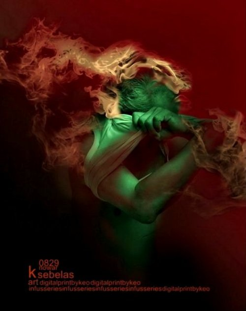Keo Budi Harijanto - He Can Do It No.17
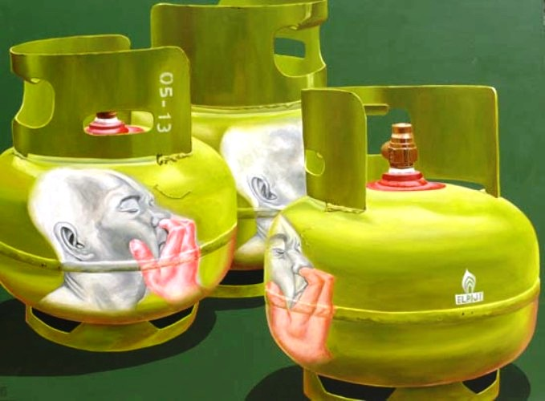Maos Art - Mohon Maaf Wajahmu Aku Pinjam Untuk Elpiji, 2008
Beberapa perupa yang menggunakan media konvensional seperti Dadang Rukmana, juga secara minimal menggunakan komputer untuk membuat "sketsa". Sedangkan Rokhim (Batu) Mula-mula memotret kemudian dikomposiskan di dalam komputer, mulai sekadar memperbaiki tone hingga memutilasi dan menggabungkan dengan foto yang sama agar nantinya "sketsa" yang dihasilkan bisa seperti yang diinginkan, "sketsa" yang ia bangun tentu saja tidak terdiri dari satu foto saja namun terdiri dari beberapa. Hal serupa, juga dilakukan oleh Kelompok Maos-Art (Rokhim, Zhirenk, Watoni, Andri Suhelmi) perilakunya sama melakukan pemotretan, memasukkan ke dalam komputer, di situ proses "sket" berlangsung, bahkan ada proses yang kala itu juga melibatkan 3d artis untuk membuat suatu gambar interior sebuah ruangan. Sedangkan Yosa Batu Prasada yang bisa dibilang berkarya beragam media juga pernah membuat pertunjukan, dengan kekuatan perupaan, teknologi dan kecermatan di tahun 2003. Project itu melibatkan nama Astu Prasidya (pernah diundang untuk Biennale I dan ke III) , dan Yoyok Prasetyo yang menjadi aktor dalam pementasan itu. Project terdiri dari aktor, yang berdialog dengan dirinya sendiri yang direkam dan menjadi karakter lain dalam wujud virtual 3 layar proyeksi. Sedangkan Keo Budi Harijanto (Malang), justru kebalikannya, ia membuat karya-karya yang berbasis medium spesifik (digital imaging). Proses yang dilakukannya justru unik, prosesnya seperti yang saya sebutkan di atas, ia secara sadar mengabaikan peruntukan fitur dalam komputer. Keo justru menggarap karyanya dengan logika membuat lukisan manual, dengan kata lain tujuan menghasilkan karya yang sesuai dengan pandangannya adalah aturan utama yang ia pakai. Kecenderungan semacam ini sesungguhnya juga telah dilakukan oleh Keo untuk penggunaan media-media yang lain, sedangkan generasi yang kemudian ada nama Bobby Nugroho, Pandu Wijaya, Agus "Suga" Salim. Ruddy Margono (Surabaya) yang pernah tampil di Biennale Jatim ke 4, menghadirkan karya abstrak yang berangkat dari "fractal".
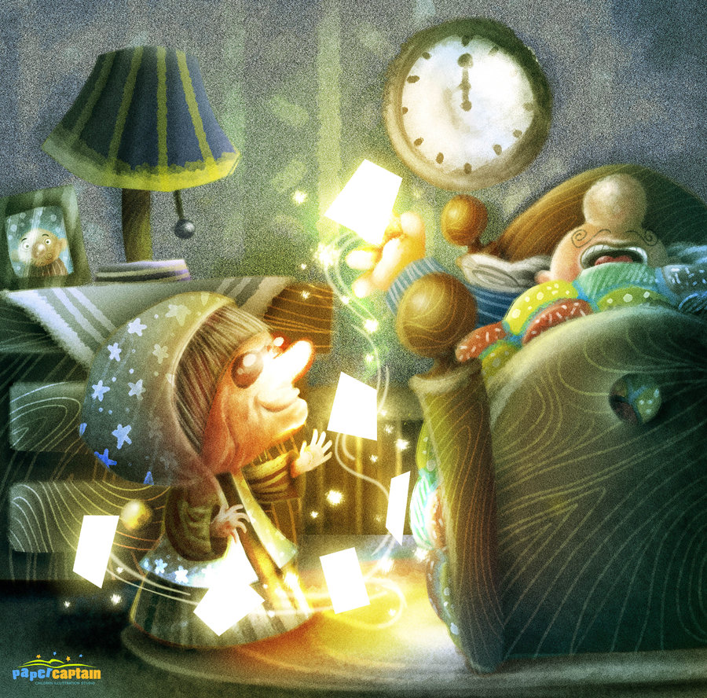Evan Raditya Pratomo - Fortune Teller, 2011
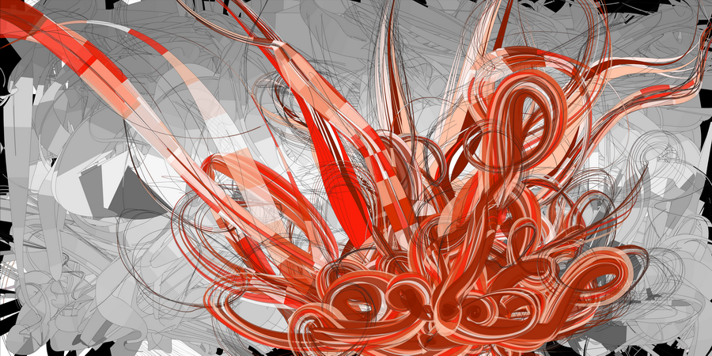Ruddy Margono - Sketch No.2, 2011
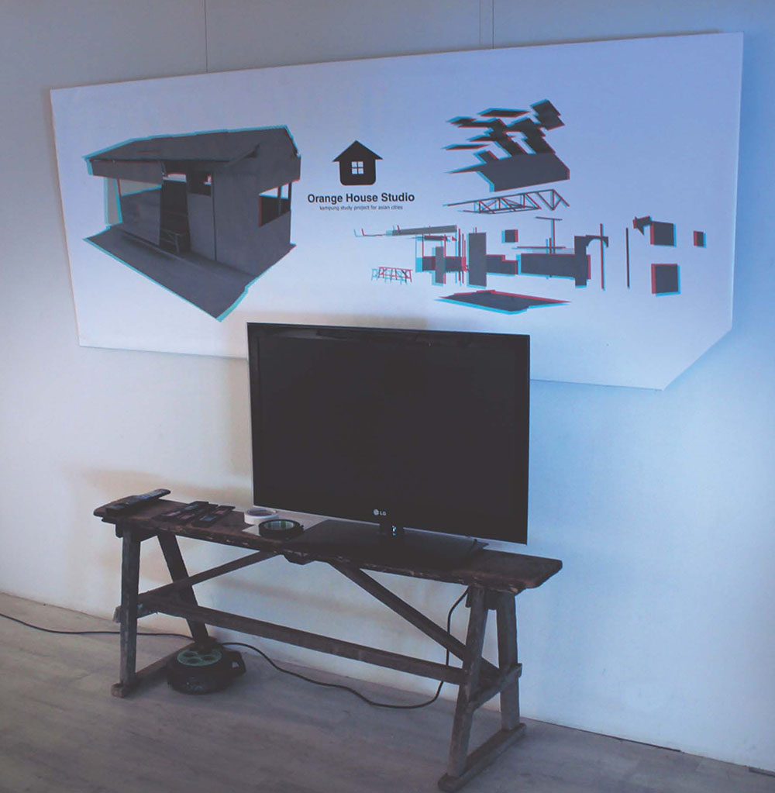Kenta (Orange House Studio) -Urban, video, 2D image, 2011
Sedangkan Evan Raditya Pratomo (Surabaya) yang juga tampil di Biennale 4, lebih memilih teknis digital painting, teknis yang digunakan menyerupai teknis cat air, ia mempertahankan corak transparan terutama dalam beberapa latar karyanya. Kenta, adalah seniman Jepang yang beberapa waktu tinggal di Surabaya. Selama tinggal di Surabaya, ia menghasilkan banyak sketsa mulai dari warung kaki lima, pemulung, sungai dan banyak lagi. pada Biennale 4, Kenta hadir sebagai komunitas, mereka menampilkan karya yang dicetak dua dimensi, namun cetakan dua dimensi di atas kertas yang berupa citra warung itu, sebelumnya diproses dengan rendering 3D Stereography, yaitu teknis pemisahan sudut pandang yang kemudian dipecah menjadi dua warna biru dan merah. Agar kesan 3D-nya terasa, maka pengunjung harus memakai kacamata stereo biru-merah yang disediakan oleh mereka. Di Surabaya ada nama Helmi Herdian, Benny Wicaksono dan Agus Sam yang berkarya dengan medium specific, dan juga ada nama Ivan Haryanto, perupa gaek untuk process specific .
Syarifuddin (@syarifshadow) Pengamat Seni Rupa, Creative Media Developer, tinggal di ngGasek, Malang.
Gelembung Sabun Courtesy of ©Kakilangit dan Yosa Batu Prasada 2003